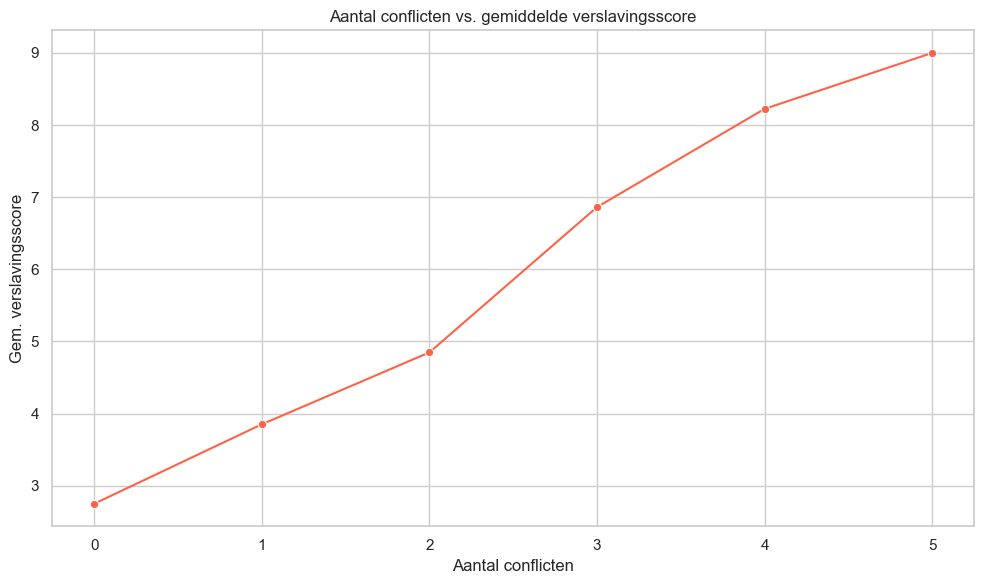
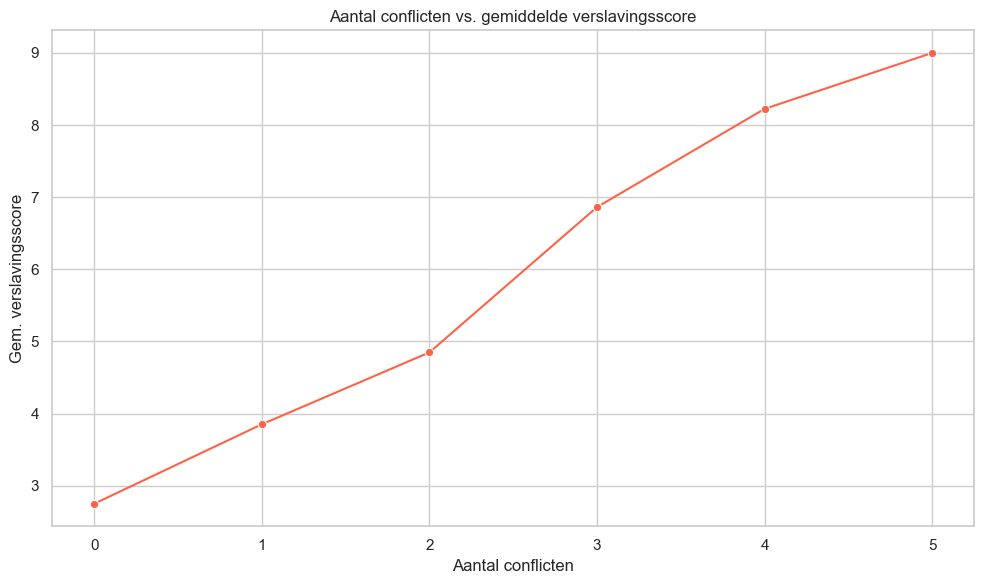

Introductie
Sociale media spelen een steeds dominantere rol in het leven van studenten en hoewel deze platforms mogelijkheden bieden voor verbinding en vermaak, nemen de zorgen toe over de mogelijke negatieve impact op de mentale gezondheid, schoolprestaties en dagelijkse routines. Dit onderzoek kijkt naar het onderwerp socialemediaverslaving onder studenten aan de hand van enquêtegegevens van een diverse groep studenten.
We kijken hiernaar vanuit twee perspectieven
Perspectief 1: Sociale media hebben een schadelijk effect op studenten Veel studenten geven aan dat hun studieprestaties negatief worden beïnvloed door sociale media. Daarnaast scoren studenten met een hoger dagelijks gebruik vaak lager op mentale gezondheid en slapen zij minder. Er is ook een duidelijk verband tussen hogere verslavingsscores en meer interpersoonlijke conflicten.
Studenten die aangeven academisch beïnvloed te worden, gebruiken sociale media vaker (Visualisatie 4)
Meer gebruik hangt vaak samen met een lagere mentale gezondheidsscore (Visualisatie 2)
Meer conflicten over sociale media gaan gepaard met hogere verslavingsscores (Visualisatie 3)
Perspectief 2: Niet alle studenten worden even sterk beïnvloed Sommige studenten slagen erin sociale media op een verantwoorde of zelfs positieve manier te gebruiken. Het gebruikspatroon verschilt per platform, en studenten uit verschillende leeftijdsgroepen tonen uiteenlopende verslavingsscores. Interessant genoeg melden sommige studenten met een hoog gebruik nog steeds een goede slaap en mentale gezondheid.
Gebruikspatronen verschillen sterk per platform (Visualisatie 1)
Leeftijdsgroepen tonen variatie in gemiddelde verslavingsscores (Visualisatie 5)
Sommige intensieve gebruikers hebben toch gezonde slaapgewoonten (Visualisatie 6)
import pandas as pd
import matplotlib.pyplot as plt
import seaborn as sns
from numpy import mean
import os
import kagglehub
# Download latest version
path = kagglehub.dataset_download("adilshamim8/social-media-addiction-vs-relationships")
print("Path to dataset files:", path)
Path to dataset files: /Users/justin_v_egmond/.cache/kagglehub/datasets/adilshamim8/social-media-addiction-vs-relationships/versions/3
import pandas as pd
import matplotlib.pyplot as plt
import seaborn as sns
from numpy import mean
import os
import kagglehub
# Download latest version
path = kagglehub.dataset_download("adilshamim8/social-media-addiction-vs-relationships")
print("Path to dataset files:", path)
csv_path = os.path.join(path, "Students Social Media Addiction.csv")
df4 = pd.read_csv(csv_path)
# df1 = pd.read_csv("Mental Health Dataset1.csv")
# df2 = pd.read_csv("mental_health_diagnosis_treatment_2.csv")
# df3 = pd.read_csv("Mental health Depression disorder Data3.csv")
# df4 = pd.read_csv("Students Social Media Addiction4.csv")
# Algemene stijl
sns.set(style="whitegrid")
plt.rcParams["figure.figsize"] = (10, 6)
plt.figure()
sns.barplot(
data=df4,
x="Most_Used_Platform",
y="Avg_Daily_Usage_Hours",
estimator=mean,
ci=None,
palette="muted"
)
plt.title("Gemiddeld dagelijks gebruik per platform")
plt.xlabel("Platform")
plt.ylabel("Gemiddelde gebruiksuren")
plt.xticks(rotation=45)
plt.tight_layout()
plt.show()
plt.figure()
sns.scatterplot(
data=df4,
x="Avg_Daily_Usage_Hours",
y="Mental_Health_Score",
hue="Gender",
alpha=0.7,
palette="Set2"
)
plt.title("Gebruik van social media vs. mentale gezondheid")
plt.xlabel("Gemiddeld aantal gebruiksuren per dag")
plt.ylabel("Mentale gezondheidsscore")
plt.tight_layout()
plt.show()
conflict_addiction = df4.groupby("Conflicts_Over_Social_Media")["Addicted_Score"].mean().reset_index()
plt.figure()
sns.lineplot(
data=conflict_addiction,
x="Conflicts_Over_Social_Media",
y="Addicted_Score",
marker="o",
color="tomato"
)
plt.title("Aantal conflicten vs. gemiddelde verslavingsscore")
plt.xlabel("Aantal conflicten")
plt.ylabel("Gem. verslavingsscore")
plt.tight_layout()
plt.show()
plt.figure()
sns.boxplot(
data=df4,
x="Affects_Academic_Performance",
y="Avg_Daily_Usage_Hours",
palette="coolwarm"
)
plt.title("Dagelijks gebruik vs. invloed op academische prestaties")
plt.xlabel("Beïnvloedt academische prestaties?")
plt.ylabel("Gemiddelde gebruiksuren")
plt.tight_layout()
plt.show()
plt.figure()
sns.boxplot(
data=df4,
x=pd.cut(df4["Age"], bins=[17, 19, 21, 23, 25]),
y="Addicted_Score",
palette="YlGnBu"
)
plt.title("Verslavingsscore per leeftijdsgroep")
plt.xlabel("Leeftijdsgroep")
plt.ylabel("Addicted Score")
plt.tight_layout()
plt.show()
plt.figure()
sns.scatterplot(
data=df4,
x="Avg_Daily_Usage_Hours",
y="Sleep_Hours_Per_Night",
hue="Gender",
alpha=0.7,
palette="cool"
)
plt.title("Socialmediagebruik vs. slaapduur")
plt.xlabel("Gemiddeld aantal gebruiksuren")
plt.ylabel("Slaapuren per nacht")
plt.tight_layout()
plt.show()
# plt.figure(figsize=(10, 4))
# sns.barplot(data=df4, x='Avg_Daily_Usage_Hours', y='Age')
# plt.title("Gemiddelde depressiescore bij hoeveelheid slaap")
# plt.xlabel("Avg_Daily_Usage_Hours")
# plt.ylabel("Leeftijd")
# plt.tight_layout()
# plt.show()
# plt.figure(figsize=(6, 4))
# sns.barplot(data=df4, x='Avg_Daily_Usage_Hours', y='Gender')
# plt.title("Gemiddelde depressiescore bij hoeveelheid slaap")
# plt.xlabel("Avg_Daily_Usage_Hours")
# plt.ylabel("Gender")
# plt.tight_layout()
# plt.show()
# plt.figure(figsize=(6, 4))
# sns.barplot(data=df4, x='Avg_Daily_Usage_Hours', y='Affects_Academic_Performance')
# plt.title("Gemiddelde depressiescore bij hoeveelheid slaap")
# plt.xlabel("Avg_Daily_Usage_Hours")
# plt.ylabel("Affects_Academic_Performance")
# plt.tight_layout()
# plt.show()
# plt.figure(figsize=(10, 4))
# sns.barplot(data=df4, x='Avg_Daily_Usage_Hours', y='Sleep_Hours_Per_Night')
# plt.title("Gemiddelde depressiescore bij hoeveelheid slaap")
# plt.xlabel("Avg_Daily_Usage_Hours")
# plt.ylabel("Sleep_Hours_Per_Night")
# plt.tight_layout()
# plt.show()
# plt.figure(figsize=(10, 4))
# sns.barplot(data=df4, x='Avg_Daily_Usage_Hours', y='Mental_Health_Score')
# plt.title("Gemiddelde depressiescore bij hoeveelheid slaap")
# plt.xlabel("Avg_Daily_Usage_Hours")
# plt.ylabel("Mental_Health_Score")
# plt.tight_layout()
# plt.show()
Path to dataset files: /Users/justin_v_egmond/.cache/kagglehub/datasets/adilshamim8/social-media-addiction-vs-relationships/versions/3
/var/folders/bf/gcjsn1cs1gdch6132wf_tnmh0000gn/T/ipykernel_9251/3501113569.py:25: FutureWarning:
The `ci` parameter is deprecated. Use `errorbar=None` for the same effect.
sns.barplot(
/var/folders/bf/gcjsn1cs1gdch6132wf_tnmh0000gn/T/ipykernel_9251/3501113569.py:25: FutureWarning:
Passing `palette` without assigning `hue` is deprecated and will be removed in v0.14.0. Assign the `x` variable to `hue` and set `legend=False` for the same effect.
sns.barplot(

 

/var/folders/bf/gcjsn1cs1gdch6132wf_tnmh0000gn/T/ipykernel_9251/3501113569.py:72: FutureWarning:
Passing `palette` without assigning `hue` is deprecated and will be removed in v0.14.0. Assign the `x` variable to `hue` and set `legend=False` for the same effect.
sns.boxplot(

/var/folders/bf/gcjsn1cs1gdch6132wf_tnmh0000gn/T/ipykernel_9251/3501113569.py:85: FutureWarning:
Passing `palette` without assigning `hue` is deprecated and will be removed in v0.14.0. Assign the `x` variable to `hue` and set `legend=False` for the same effect.
sns.boxplot(